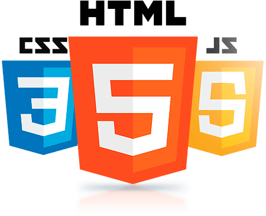

No css você pode redimensionar o tamanho da sua imagem mas você não consegue mudar o tamanho do arquivo que você colocou lá. Sempre redimensione o tamanho do arquivo em algum programa como o gimp, photoshop ou corel pois desta forma ele não ficará pesado e consequentemente não deixará o seu site "pesado". Sites lentos não aparecem no google e outros dispositivos de busca com facilidade.
Abaixo você vai ver uma imagem que está na mesma pasta
Podemos também carregar imagens que estão em sub-pastas
E imagens externas
O fav icon é um tipo de imagem que para melhor funcionamento deve ser um doc .icon e não .png ou .jpeg